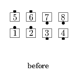
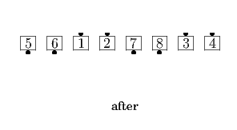

From Parallel Two-Faced Lines, Promenade (with designated dancers as Leaders), and other applicable formations: Leaders do a Turn to a Line or Reverse Turn to a Line, working away from the Center of the set, as the Trailers 1/2 Circulate. Parallel Two-Faced Lines end in an As Couples Wave.
 
© Copyright 2004-2017 Vic Ceder and CALLERLAB Inc., The International Association of Square Dance Callers. Permission to reprint, republish, and create derivative works without royalty is hereby granted, provided this notice appears. Publication on the Internet of derivative works without royalty is hereby granted provided this notice appears. Permission to quote parts or all of this document without royalty is hereby granted, provided this notice is included. Information contained herein shall not be changed nor revised in any derivation or publication.